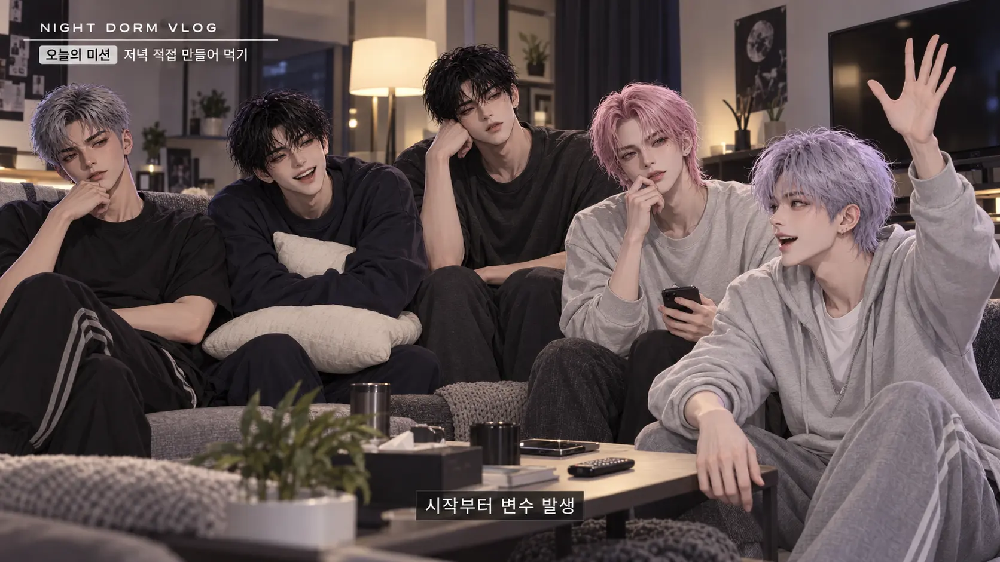
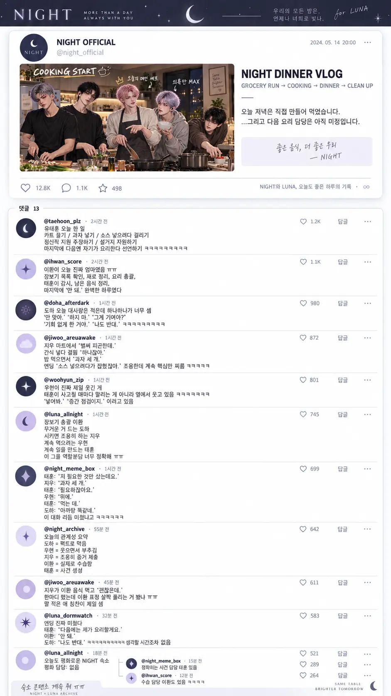

OFF THE STAGE / 06 EPISODES
NIGHT VLOG
사진으로 이어 보는, 우리의 하루.
이미지 슬라이드 · 음성 없음

00:00 / 01:18
01 / 13
NIGHT / TOGETHER
오늘 저녁은 우리가 만들게
다섯 멤버가 함께 준비하는 숙소의 저녁.
장면당 6초 · 사진을 더 보고 싶다면 일시정지해 주세요.
AFTER WATCHING
LUNA REACTIONS
함께 보는 팬 반응 이미지

원본 크게 보기 ↗